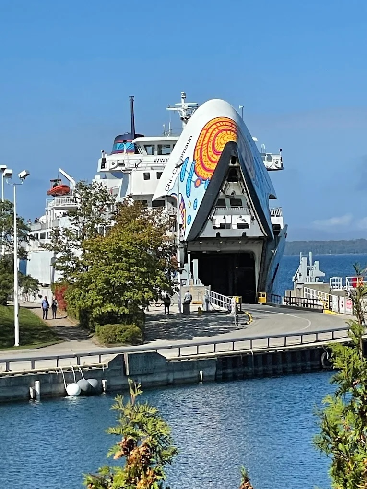
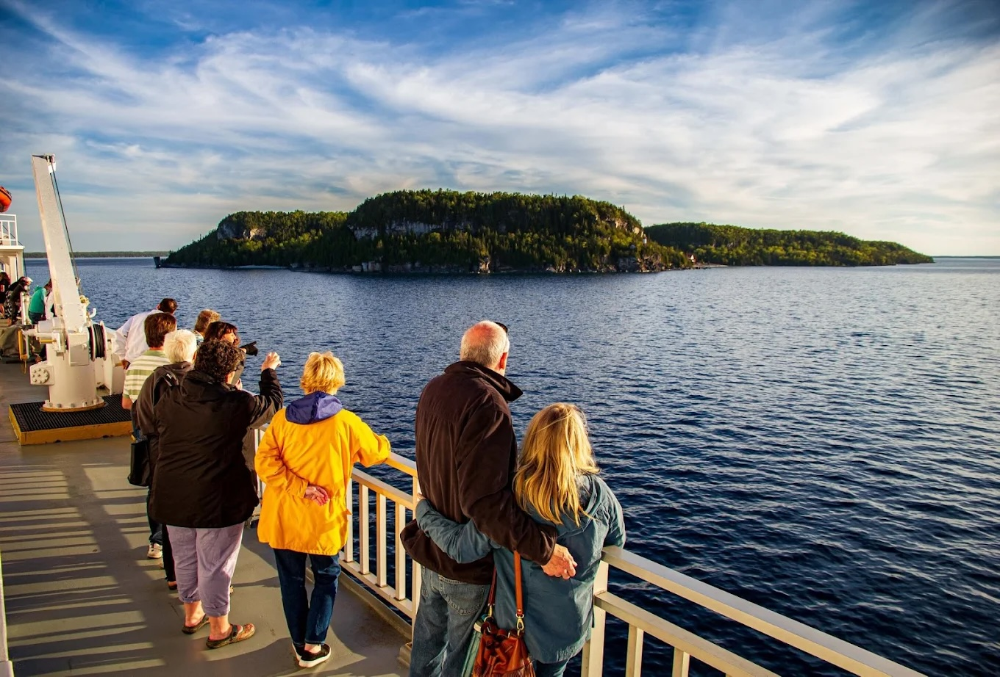

Ваше путешествие на остров Манитулин
24 - 25 Мая, 2025
Суббота, 24 Мая 2025: Дорога и прибытие
~8:45 утра
Выезд из Торонто
Начало вашего приключения! Отправляемся в сторону Тобермори.
~12:30 дня
Прибытие в Тобермори
Прибываем в живописный Тобермори и регистрируемся на паром.
1:30 дня
Отправление парома Chi-Cheemaun
Поднимаемся на борт "Большой Каноэ" и отправляемся на остров Манитулин.
~3:30 дня
Прибытие в Саут-Беймаут
Ступаем на землю острова Манитулин! Время насладиться первыми видами.
~3:30 – 4:30 дня
Дорога к месту ночлега
Едем через живописные пейзажи острова к нашему уютному ранчо "Kicking Mule Guest Ranch".
~4:30 – 5:00 вечера
Заселение и отдых
Прибыли в "Kicking Mule Guest Ranch"! Время распаковать вещи, расслабиться и насладиться вечером.

Воскресенье, 25 Мая 2025: Хайкинг и возвращение
Утро
Завтрак и сборы
Начинаем день с вкусного завтрака и готовимся к походу на "Cup and Saucer".

~9:00 утра – 1:00 дня
Хайкинг "Cup and Saucer"
Исследуем знаменитую тропу, наслаждаемся видами со скал. Незабываемые впечатления!

~1:00 – 2:00 дня
Обед и отдых
Восстанавливаем силы после хайкинга вкусным обедом.
~2:30 – 3:00 дня
Дорога к парому
Выезжаем в Саут-Беймаут, чтобы успеть на паром домой.
3:50 дня
Отправление парома из Саут-Беймаут
Прощаемся с островом Манитулин и плывем обратно в Тобермори.
~5:50 вечера
Прибытие в Тобермори
Снова на материке. Готовимся к последнему отрезку пути.
~5:50 вечера – 9:45 вечера
Дорога домой в Торонто
Едем обратно, вспоминая прекрасные моменты поездки.
~9:45 вечера
Прибытие в Торонто
Путешествие завершено! До новых встреч, Онтарио!